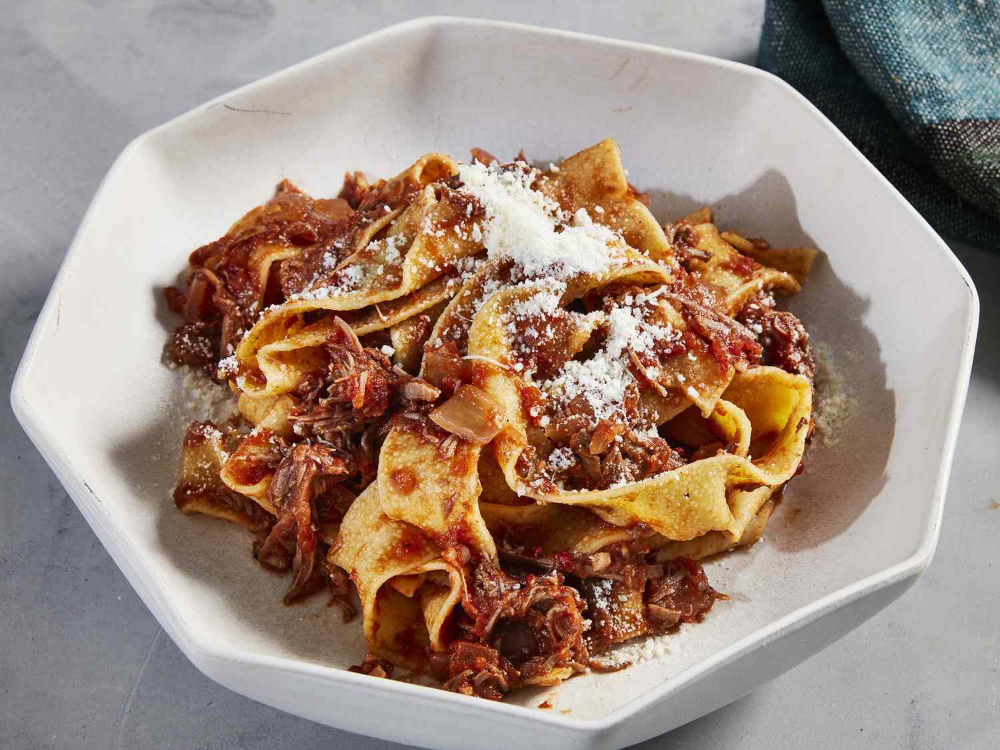

Beef ragu—a traditional Italian dish—is a slow-simmered sauce made with beef, tomatoes, pasta, etc. Many newer ragu recipes use sambal oelek or anchovy paste to help build flavor, so I've used harissa, but feel free to replace with 1/2 teaspoon crushed red pepper or 1 teaspoon fennel seeds or omit. If you like you can add rosemary sprigs to the sauce as it simmers.
- 2 tablespoons olive oil
- 1 (2 pound) boneless beef chuck roast, cut into 2-inch cubes
- 1 teaspoon ground black pepper
- 3 teaspoons kosher salt, divided
- 1 yellow onion, chopped
- 6 cloves garlic, chopped
- 2 tablespoons harissa (Optional)
- 2 tablespoons tomato paste
- 1 cup dry red wine
- 1 (28 ounce) can crushed tomatoes
- 1 bay leaf
- 1 pound pappardelle pasta, cooked and drained
- grated Parmesan cheese, for serving
- Heat oil in a large Dutch oven over medium-high. Season chuck roast with pepper and 2 teaspoons salt. Sear meat until browned on every side, working in batches if necessary, about 10 minutes. Remove from Dutch oven and transfer to a large plate.
- Reduce heat to medium and stir in onion. Cook, stirring often, until softened, about 8 minutes. Add garlic and cook, stirring constantly, until fragrant, about 1 minute. Stir in harissa and tomato paste; cook, stirring constantly, until caramelized, about 2 minutes.
- Pour in wine and cook, scraping the bottom of the pot with a wooden spoon to loosen any browned bits, until reduced by two thirds, about 5 minutes. Stir in tomatoes, bay leaf, chuck roast, and remaining 1 teaspoon salt. Reduce heat to medium-low and cover. Cook, stirring occasionally, until meat is tender, sauce has thickened, and flavors meld, about 2 1/2 hours.
- Remove and discard bay leaf. Transfer meat from Dutch oven to a cutting board and shred using 2 forks. Return meat to pot and stir in pappardelle. Top with grated Parmesan cheese.